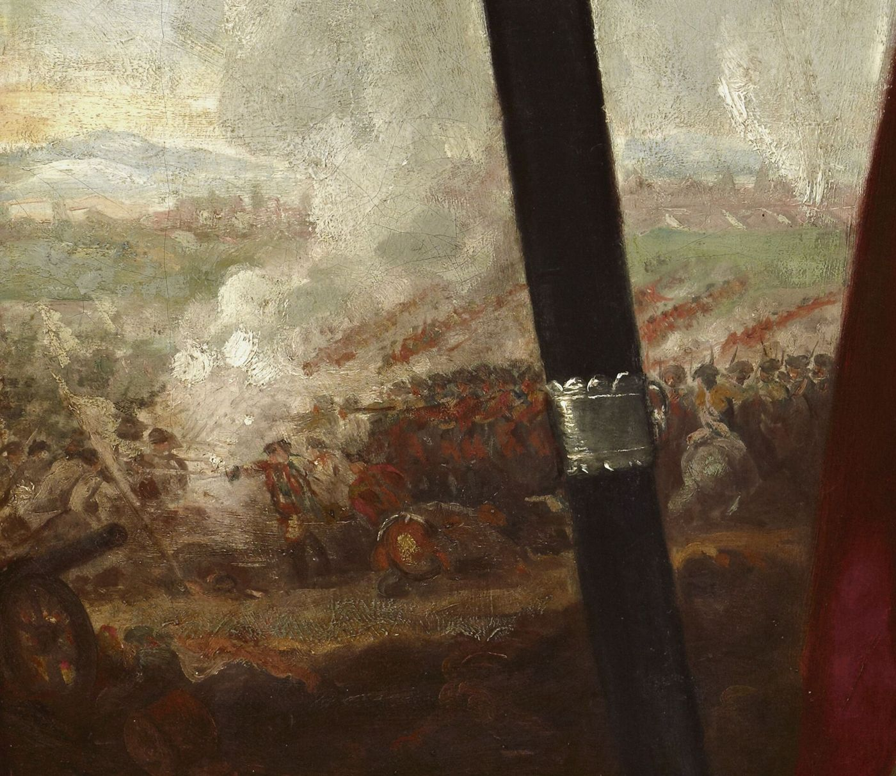
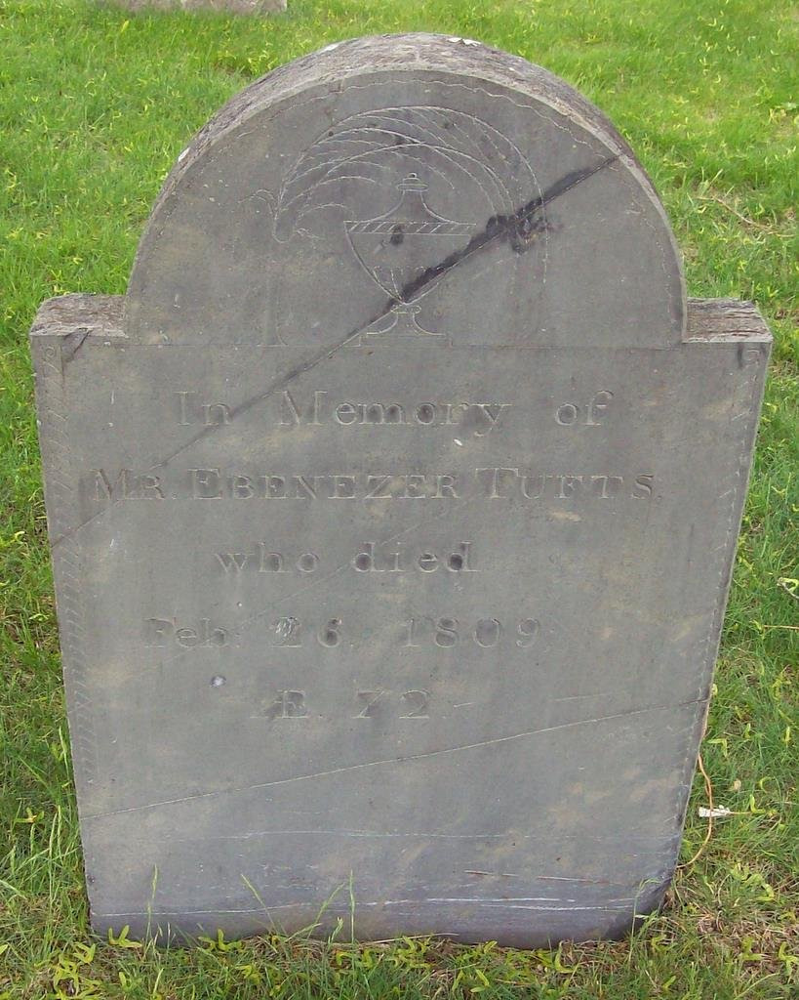

Biography
Ebenezer Tufts, a Medford brickburner, answered the Lexington alarm and later stood guard over the Convention Troops, Burgoyne’s captured army.
Service Record
Town: Medford · Dates: 1737 – 1809
Born 18 Mar. 1737 in Medford; died 26 Feb. 1809; brickburner. (Tufts Kinsmen, Vol. I, p. 153, family no. 36-7; owner-supplied extract; page scan not on file)
Answered the Lexington alarm; private, serving as a guard of the Convention Troops; marched to Noddle’s Island. (Tufts Kinsmen, Vol. I, p. 153, family no. 36-7; owner-supplied extract; page scan not on file)
Family Connection
Family number 36-7 in Tufts Kinsmen, Vol. I. Parents are not named in the extract seen.
Spouse(s)
Not found in the sources checked (Brooks 1855 Register of Families; Wild; Find a Grave data on file; Tufts Kinsmen Vol. I extract).
Authoritative IDs / Index Numbers
| Source | ID / status |
|---|---|
| Perseus person index (auth=) | auth=tufts,ebenezer. This is a name-level key shared by every Ebenezer Tufts in Perseus, not a personal ID. Use it with the passages cited on this page. |
| Find a Grave memorial | 26903887 (dates and family checked) |
| Brooks, History of Medford (1855) register no. | Checked, no entry confidently matched |
| Tufts Kinsmen, Vol. I family no. | 36-7 |
| Mass. Soldiers and Sailors | Not yet checked for this page |
| DAR ancestor no. | Not yet checked (the DAR GRS needs a browser session) |
| FamilySearch ID | Not yet checked (FamilySearch is blocked from this machine; owner to check) |
| Geni profile | Not yet checked (Geni requires sign-in) |
| WikiTree ID | Not yet checked (WikiTree API refused requests on 3 Nov. 2026: rate limit) |
| Town / vital records | Medford VRs not yet checked by volume and page |
Only IDs confirmed against dates and family are given as matches. “Not yet checked” means the source has not been searched; “Checked, not found” means it was searched without a match.
⚑ Unverified
Possible match to “Tufts Ebenezer” on the Medford 1925 Minute Men monument; not confirmed. The Tufts Kinsmen Vol. I statements on this page come from an extract supplied by the owner and have not yet been checked against a page scan (citation rule: page scan not on file). No other source on this site has yet been checked for this man.
Pictures



.jpg){kind=link}
Find a Grave
Find a Grave memorial 26903887. As given there (secondary; not checked against original records): Born 18 Mar 1737, Medford; died 26 Feb 1809, Medford. Salem Street Burying Ground, plot 66.
⚑ Unverified: Find a Grave conflict
Age at death. The memorial says aged 71; the stone reads “Æ 72.”


Business
A man of this name appears in Brooks’s History of Medford in connection with the brickyards. Whether it is this man is Unverified. See Businesses.
Further Research Links
Outside resources for further research. Secondary and user-contributed sites (blogs, family trees, memorial sites, Wikipedia) are not verified here.
- Tufts Genealogy Blog – Ebenezer Tufts (1761-1830) Service Record (Tufts Genealogy blog) Secure (https) version listed separately.
- Tufts Genealogy Blog – Ebenezer Tufts (1761-1830) Service Record (Tufts Genealogy blog)
- Helen Tilden Wild, Medford in the Revolution (1903) – Full PDF (Internet Archive)
- 26th Continental Regiment (Col. Loammi Baldwin) (Wikipedia)